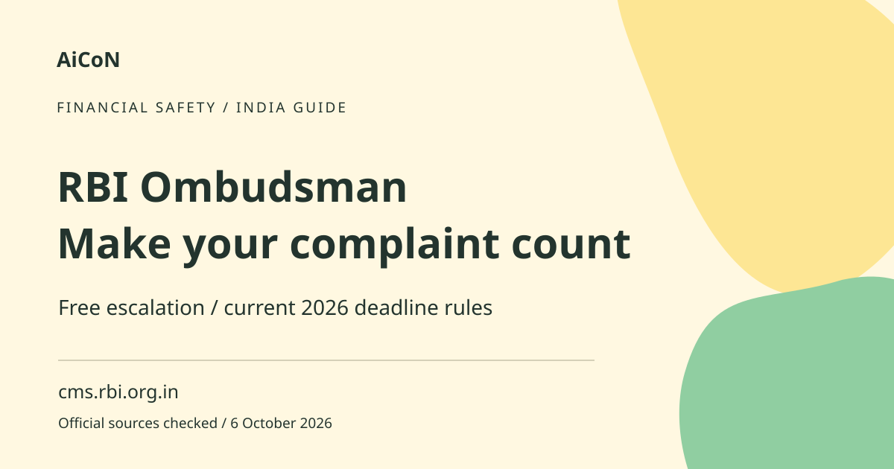

RBI Ombudsman: file a bank complaint under 2026 rules
The RBI Ombudsman is a free complaint route for eligible service failures by covered banks and other regulated entities. First complain to the institution. Then check the current waiting period and filing deadline before escalating.

What is the RBI Ombudsman?
An Ombudsman is an independent complaint-resolution authority. RBI's Integrated Ombudsman Scheme covers eligible complaints about deficient service by regulated entities. A regulated entity is an institution under RBI oversight, such as a covered bank or lender. Not every financial dispute or company comes under this scheme. The office checks whether your complaint qualifies before deciding the merits.
The 2026 rule replaces older advice
RBI's FAQ updated 1 July 2026 says the Integrated Ombudsman Scheme, 2026 took effect that day and replaced the 2021 scheme. Complaints received before that date and specified related proceedings continue under the old scheme. Do not use a remembered older deadline for a new complaint. The current FAQ confirms the 90-day rule below. The earlier AiCoN post's 90-day figure is verified, not a typo.
When can you escalate?
First approach the regulated entity and keep proof. You can approach the Ombudsman if you are dissatisfied with its reply or resolution. If you have no reply, the waiting period is 30 days or the period specified by RBI, NPCI or card-network rules, whichever is longer. NPCI operates India's retail payment systems. A longer applicable payment-dispute timeline can therefore matter.
The complaint must be made to the Ombudsman within 90 days from expiry of that applicable waiting timeline or the date of the last communication from the entity, whichever is later. The original complaint to the entity must also have been made within the applicable legal limitation period. Exact deadline calculations can depend on your records. If dates are unclear, use the official guidance promptly instead of waiting.
How to prepare and file, step by step
- Write to your bank or covered lender using its official grievance route. State what happened, the relevant date, transaction reference, loss and remedy you want.
- Save the complaint, submission date and acknowledgement number. Keep the institution's replies and relevant statements or transaction evidence.
- Check whether the reply is unsatisfactory or the applicable waiting period has expired. Note the current 90-day deadline and do not delay escalation.
- Open cms.rbi.org.in directly. Choose the complaint-lodging route and read the eligibility questions and instructions.
- Provide your name, mobile number, postal address and email if available. Identify the regulated entity, branch or location, and original complaint number and date.
- Describe the facts in date order. Include relevant account, loan or transaction information and the relief sought. Upload supporting documents and the institution's reply, if any.
- Review the application. Do not include unrelated private records or passwords. Submit through the official route and save the complaint number.
- Track progress through CMS using the complaint number and mobile number. Respond to official requests for supporting information and keep copies.
Cost and India availability
Filing and resolution under the 2026 scheme are free. You do not need to pay a third-party agency. Eligible customers in Kerala can use the national route; they do not need to locate a particular local Ombudsman office. The FAQ says CMS filing is in Hindi and English, while the facts box can contain another language subject to its character limit. Email or physical complaints may be made in any language.
Need help in Malayalam?
The RBI Contact Center number is 14448. Its automated service is available 24 hours. The checked FAQ lists staff assistance from 8 AM to 10 PM, Monday to Saturday except national holidays, with Malayalam among the supported regional languages. The Contact Center can guide you and help with status; it cannot directly lodge the complaint. Check the official page for changes to support hours.
Other official filing routes
The FAQ also permits email to crpc@rbi.org.in and a signed physical complaint with documents to the Centralised Receipt and Processing Centre, Reserve Bank of India, Central Vista, Sector 17, Chandigarh - 160017. Use the official complaint form and verify the route before sending sensitive records. We did not send or file anything for this article.
Limits and safety
A complaint may be rejected if it is premature, late, outside coverage or otherwise not maintainable. Maintainable means the scheme can legally take it up. A dispute already being considered in another relevant forum can also affect admissibility. Read RBI's full FAQ for your circumstances. The Ombudsman does not guarantee a refund just because you file.
Do not pay a caller promising compensation. RBI complaint help does not require your OTP, UPI PIN, card PIN or online-banking password. If the issue involves an active financial scam, do not delay urgent bank and cybercrime reporting while waiting for the Ombudsman process.
Frequently asked questions
Do I have to complain to the bank first?
Yes. Keep proof and follow the applicable waiting or unsatisfactory-response condition.
Is the deadline one year?
Do not apply old advice to a new 2026 complaint. The current RBI FAQ sets the 90-day deadline described above, with its stated start point.
Can 14448 file my complaint?
No. It gives guidance and status help. File through CMS, official email or physical route.
Is a refund guaranteed?
No. Admissibility, facts, evidence and the scheme determine the outcome.
Official sources
Checked 6 October 2026. Expanded from an AiCoN short post delivered in October 2026. Portal screens and rules can change.